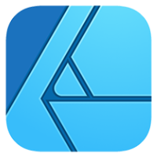
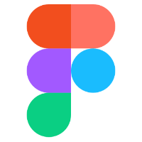
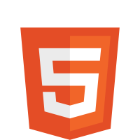
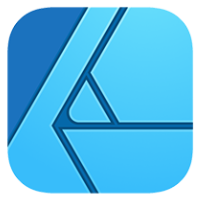
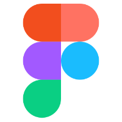
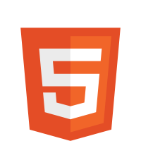
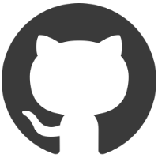
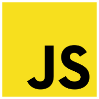
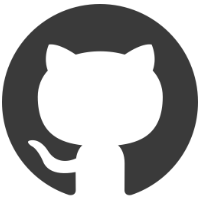
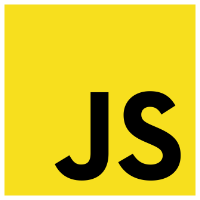

Vzdělání
Studium
V kreativním oboru jsem více jak půl svého života. Pracovala jsem více jak 10 let v 3D, ale ve 2D a digitální grafice jsem se našla.
Dobrý den Red Peppers,
Tvorbě webů se věnuji více jak tři roky a neskutečně mě baví tento svět IT objevovat. Začínala jsem jako web designér, weby jsem tvořila převážně na WordPressu pomocí page builder Elementor nebo jsem webové stránky navrhovala v Adobe XD.
Minulí rok jsem absolvovala dlouhodobý kurz Staň se kodérkou u Czechitas. Na kurzu jsem se naučila nakódovat responzivní webové stránky pomocí HTML a CSS. Používat preprocesor Sass a metodiku BEM. Kurz také obsahoval základy UX.
„Tento obor je nekončící výzva
a to mě na tom baví asi nejvíc.“
V kreativním oboru jsem více jak půl svého života. Pracovala jsem více jak 10 let v 3D, ale ve 2D a digitální grafice jsem se našla.
Fakulta designu a umění Ladislava Sutnara Západočeské univerzity v Plzni
Fakulta designu a umění Ladislava Sutnara Západočeské univerzity v Plzni
Vyšší odborná a střední průmyslová škola Šumperk
Pro grafický návrh webů používám aplikace od Adobe Creative Cloud, Affinity Designer a Figmu. Svůj zdrojový kód píšu v editoru Visual Studio Code pomocí HTML5, CSS3 a preprocesorového jazyka Sass, umím také pracovat s frameworkem Bootstrap.
Když mám čas, snažím se učit nové věci. Momentálně zkouším JavaScript a jQuery


 







 



Důležitá je pro mě funkčnost webu a dotažení každého detailu. Sleduji nové trendy v digitálním světě, ale nezapomínám na nadčasový a použitelný design.
Na začátku každého projektu provedu důkladnou analýzu stávajícího webu a rešerši konkurence na trhu. Pro každý projekt jsou důležité správně položené otázky a cíl webové prezentace. Na základě důkladné analýzy a vstupních podkladů zhotovuji wireframe, který definuje funkci a celou strukturu webových stránek.
Snažím se navrhovat webové stránky, které jsou funkční a jednoduché, ale zároveň s důrazem na detail a zajímavé grafické zpracování, to ráda ztvárňuji pomocí ikon, které uživateli ulehčí intuitivnější orientaci na webu.
Při psaní kódu webového rozhraní upřednostňuji metodu Mobile First. Pro čitelnější kód používám preprocesorový jazyk Sass a metodiku BEM, která mi umožnuje mít kód přehlednější.
Zde je ukázka projektů z mého portfolia, u každého projektu naleznete štítky, co jsem na webu tvořila. Na GitHubu jsou zveřejněné menší úkoly, které jsem dělala v rámci kurzu Staň se kodérkou, najdete zde i závěrečný projekt, který byl podmínkou pro splnění kurzu. Jako závěrečný projekt jsem vytvořila vlastní webovou prezentaci.